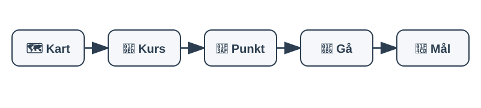

🧭 Kart og kompass
Kart og kompass fungerer uten strøm, mobildekning og GPS. Lær deg grunnprinsippene før du trenger dem i en nødssituasjon.
🗺️ 1. Orienter kartet
- Legg kartet flatt på bakken eller hold det stødig.
- Drei kartet til nord på kartet peker samme vei som kompassnålen.
- Når kartet er orientert, blir terrenget enklere å kjenne igjen.
📍 2. Finn hvor du er og hvor du skal
- Identifiser posisjonen din på kartet.
- Finn målet eller neste kontrollpunkt.
- Bruk tydelige landemerker som veier, vann, bygninger eller topper.
🧭 3. Ta ut kompasskurs
- Legg kompassets kant mellom startpunkt og mål på kartet.
- Vri kompasshuset til nordlinjene er parallelle med kartets nord-sør-linjer.
- Sørg for at N-merket peker mot nord på kartet.
🚶 4. Følg kursen
- Hold kompasset flatt foran deg.
- Drei kroppen til kompassnålen ligger inni nordpilen.
- Marsjpilen viser retningen du skal gå.
🎯 5. Naviger trygt
- Sikt mot et tydelig punkt i terrenget.
- Gå til punktet og ta ny peiling ved behov.
- Kontroller jevnlig at du fortsatt følger riktig kurs.
- Bruk terrenget aktivt og unngå å stole blindt på én metode.
⚠️ Husk
- GPS, mobilnett og batterier kan svikte.
- Kart og kompass fungerer også under langvarige strømbrudd.
- Øv på navigering før du får bruk for ferdighetene.
📚 Kilde
Innholdet er basert på veiledningen Kartverket – Lær deg kart og kompass .
